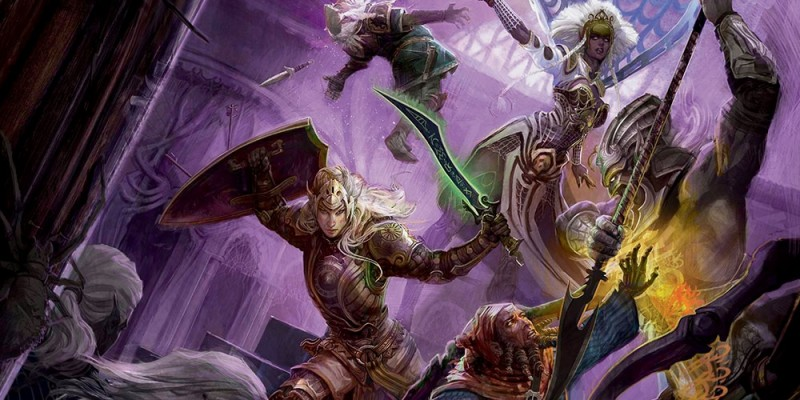

Exemple de combat à D&D 5
3 personnages (Armand, Brutus et Carole) affrontent 2 gobelins (Yak et Zok) dans une salle.
Initiative
LES PERSONNAGES
Voici les caractéristiques des PJ qui nous intéressent pour le combat :
Armand (roublard niv 1)
¤ CA 16 ; pv 8
¤ FOR 12 (+1) DEX 15 (+2) CON 11 (+0)
Brutus (barbare niv 1)
¤ CA 14 ; pv 16
¤ FOR 16 (+3) DEX 8 (-1) CON 18 (+4)
Carole (guerrière niv 1)
¤ CA 14 ; pv 11
¤ FOR 15 (+2) DEX 16 (+3) CON 13 (+1)
Avant de commencer le combat, les participants doivent effectuer un jet de Dextérité afin de déterminer l'ordre dans lequel ils vont jouer. Chacun lance alors un d20 et ajoute le modificateur de Dextérité de son personnage :
- Le joueur d'Armand fait 10 au dé 20, et on ajoute son modificateur de Dextérité de +2 ; il a donc 12 en initiative.
- Le joueur de Brutus fait 15 au dé, plus son modificateur de Dextérité qui est en fait un malus de -1 ; il a donc 14 en initiative.
- La joueuse de Carole fait 13, plus son bonus de Dextérité de +3 ; elle a donc 16 en initiative.
- Le MD lance un seul dé pour les deux gobelins. Il fait 10 et les gobelins qui ont 14 en Dextérité ont un bonus de +2 ; ils ont donc chacun 12 en initiative.
C'est donc Carole qui jouera en premier, puis Brutus. Comme Armand et les gobelins ont la même initiative, c'est le MD qui décide qui jouera avant l'autre, et il donne la préférence à Armand. Les gobelins joueront en dernier.
Note : le bonus de maîtrise ne s'applique qu'aux jets de caractéristique avec des compétences ou des outils que vous maîtrisez, donc on ne l'ajoute pas au jet d'initiative.
Round 1
Carole avance au contact du gobelin Yak, une épée longue en main. Sa joueuse lance un d20 pour son jet d'attaque et obtient 16 au dé, +2 de son bonus de maîtrise et +2 de son modificateur de Force, soit 20 au total. Ce nombre étant supérieur ou égal à la Classe d'Armure (CA) du gobelin, qui est de 15, Carole le touche. Sa joueuse jette alors le dé de dégâts pour une épée longue, soit un d8, et obtient 3, auquel on ajoute les +2 de son modificateur de Force, pour un total de 5. Le gobelin Yak qui avait 7 points de vie (pv) en perd donc 5 ; il n'a plus que 2 pv.
C'est maintenant au tour de Brutus qui attaque au corps à corps l'autre gobelin avec une hache à deux mains. Son joueur lance le d20 de son jet d'attaque et obtient 20 au dé, +2 de son bonus de maîtrise et +3 de son modificateur de Force, soit 25 au total. Ce nombre étant là aussi supérieur ou égal à la CA du gobelin, Brutus le touche, et en plus c'est un coup critique car un 20 naturel au d20. Son joueur jette alors deux fois les dés de dégâts pour une hache à deux mains, soit 2d12, et obtient 8 et 2, auquel on ajoute les +3 de son modificateur de Force, pour un total de 13. Le gobelin Zok perd donc 13 pv alors qu'il n'en avait que 7. Il est mort !
Armand le roublard est à plusieurs mètres du seul gobelin survivant et décide de lui lancer sa dague. Son joueur fait son jet d'attaque et obtient 6, +2 de son bonus de maîtrise et +2 de son bonus de Dextérité car c'est une attaque à distance, soit 10 au total. La CA du gobelin étant de 15, ce n'est pas suffisant et cela signifie qu'Armand rate sa cible.
LES GOBELINS
De la fiche des gobelins nous allons retenir les caractéristiques suivantes :
¤ CA 15 ; pv 7 ; DEX 14 (+2)
¤ un cimeterre : +4 au toucher, 5 (1d6 + 2) dégâts tranchants.
Le MD joue alors le tour du gobelin Yak face à Carole. Il lance son jet d'attaque et obtient 10, plus le bonus au toucher de +4 du gobelin, le total est de 14. C'est exactement la valeur de la CA de Carole, donc supérieur ou égal à celle-ci, et le gobelin la touche. Le MD a alors à ce stade deux options : soit il jette les dégâts (la fiche du gobelin indique qu'il devra lancer 1d6 et ajouter un bonus de +2), soit il utilise la moyenne des dégâts pour aller plus vite (c'est le "5" indiqué sur la fiche avant "1d6 +2"). Notre MD utilise la deuxième option et Carole perd donc 5 points de vie. Heureusement elle en avait 11 et par conséquent elle continuera le combat au round suivant avec 6 pv.
L'autre gobelin, Zok, est mort, donc bien entendu il ne joue pas. On passe alors ensuite au round suivant et c'est de nouveau à Carole de jouer...

Écrit par blueace